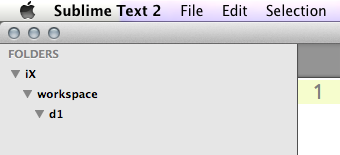
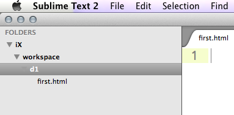

Topics Covered: Course introduction
Relevant Resouces: Make sure you're caught up on the Treehouse coursework! The pace will pick up from here, so it's essential you don't start already behind.
Learn the name, hometown, interests and some interesting facts about two of the people sitting near you.
We're going to build off of the prework to set up the working environment. All this material should be review, but if you have questions don't hesitate to ask.
In your home folder, create a folder called iX (note that ~ is a shortcut for /Users/your-name on a Mac). Inside that, create a folder called workspace. In your shell, switch to that directory with cd or dir and start a git repository. Lastly, create a folder called d1 (for day 1).
$ cd ~
$ mkdir iX
$ cd iX
$ mkdir workspace
$ cd workspace
$ git init
Initialized empty Git repository in /Users/my_name/workspace/.git/
$ mkdir d1Windows users: While all the examples and screenshots are done on Macs, all the code should work (after slight modification) on your machine, especially if you have Cygwin or Git bash installed. If you don't and are stuck, please ask one of the TA's and they'll help you out!
Every day, you'll create a new folder for the classwork done during that day. Next, open the folder you've created in Sublime Text (File -> Open and then choose the folder on a Mac, File -> Open Folder... then choose the folder on Windows). Your Sublime should look exactly like below:

Right click on the d1 folder and choose "New File". Then save that file (File -> Save or Command-s on Mac or Ctrl-s on PC) as first.html. Now your screen should look like this:

In that file, type <p>hello world!</p>. Make sure to save again, and then open that folder in Google Chrome (right click on the file in the Sublime left sidebar and choose "Reveal in Finder". Then right click on the file in Finder and choose Open With -> Google Chrome). Now you should see a page in Chrome with hello world written on it—congratulations, you've made your first web page at iExperience!
Protip (Macs): Set your default application for html files as Chrome: Right-click on any HTML file, and choose "Get Info". Then choose Chrome as the Open With, and click "Change All...". Then you can just type open filename.html in the Terminal and it'll come up. No more using the mouse!
For this exercise, we're going to make a real web page, using the html, head and body tags you've already learned. Create a new file in the d1 folder called second.html and write the following (don't copy paste!):
<doctype html>
<html>
<head>
<title>My second webpage</title>
</head>
<body>
<p>hello world!</p>
</body>
</html>Open it in Chrome...do you see any difference betweeen this web page and the one you created in E2?
$ pwd
/Users/your_name/iX/workspace
$ ls
d1
$ ls d1
first.html second.html
$ git add .
$ git commit -m "Made first html files"
$ git remote add origin https://github.com/username/iX-workspace.git
$ git push -u origin masterOver the next few weeks, you'll have a chance to show off the HTML and CSS you've learned in the prework by building your own personal page. Doing so is a great way to create an online presence that's a bit more unique than having a Facebook/Twitter/LinkedIn/Github, and lets others see what a good designer and coder you are. It's also a great form of expression that allows you to make a small mark in your corner of the Internet. At the very least, it's great practice for the other phenomenal websites you'll build!
To put your page on the internet, we'll be using
Github pages. To start, follow the instructions there for a User site (not a project site). In the "Clone the repository" step, make sure you clone into the projects directory.
Note that yours won't be called iExperience.github.io, but github-username.github.io.
Continue to follow the directions, creating a properly created index.html page. After you're done, you'll have your very own, personalized internet presence! It should look something like this, except the URL should not include /personal/1A.html.